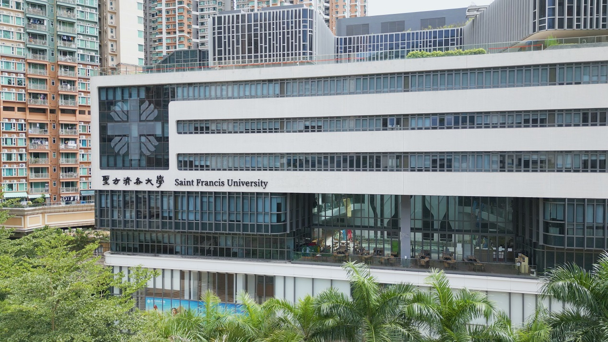

相關課程 / 官方資料參考
人工智能及資訊通訊科技高級文憑
任白慈善基金電子計算及信息科學院
以下係 HDAI-ICT 嘅公開課程資料，用嚟介紹學院嘅 AI 與 ICT 教學方向。個人學習內容見下方「學習記錄」。
- 修讀模式
- 兩年全日制HDAI-ICT
- 資歷架構
- 第四級（QF Level 4）QR 24/000308/L4
- 授課語言
- 英語為主，中文輔助
由基礎概念開始，用作品理解技術
AI 與 ICT 學習方向
在學我嘅學習興趣集中喺人工智能、資訊及通訊科技同網頁製作。呢個作品集係將課堂所學，整理成一個可以直接瀏覽嘅實作。

院校資料 / 香港
SAINT FRANCIS UNIVERSITY
相關課程 / 官方資料參考
任白慈善基金電子計算及信息科學院
以下係 HDAI-ICT 嘅公開課程資料，用嚟介紹學院嘅 AI 與 ICT 教學方向。個人學習內容見下方「學習記錄」。
COURSEWORK / 02
展開每項，睇我想實踐嘅重點
用 HTML 建立清楚嘅頁面結構，用 CSS 排版，並考慮不同螢幕大小下嘅閱讀同導覽。
喺呢份作品集實踐 JavaScript 互動、表單驗證同安全文字輸出，亦留意外部連結同前端資料處理。
透過 C++、Python 同邏輯練習，學習將問題拆成步驟，再逐步檢查結果。
練習清楚表達項目想法，用文章、簡報同影像令內容更容易理解。
LEARNING CYCLE / 03
先睇清楚目的同限制
將概念變成可操作嘅作品
檢查連結、內容同使用方式
按發現嘅問題調整作品